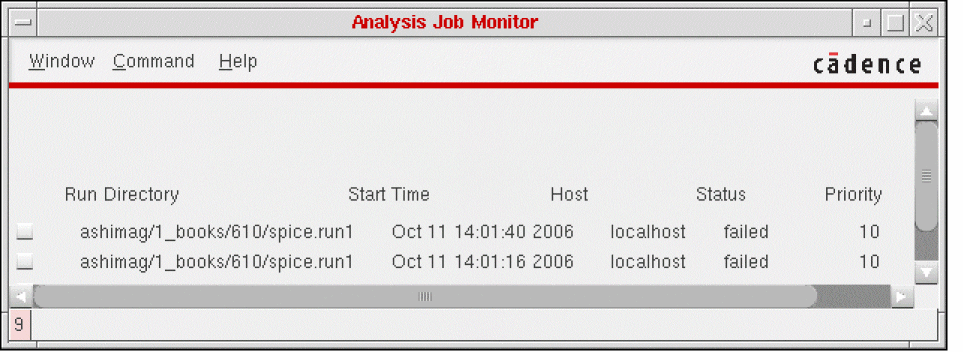
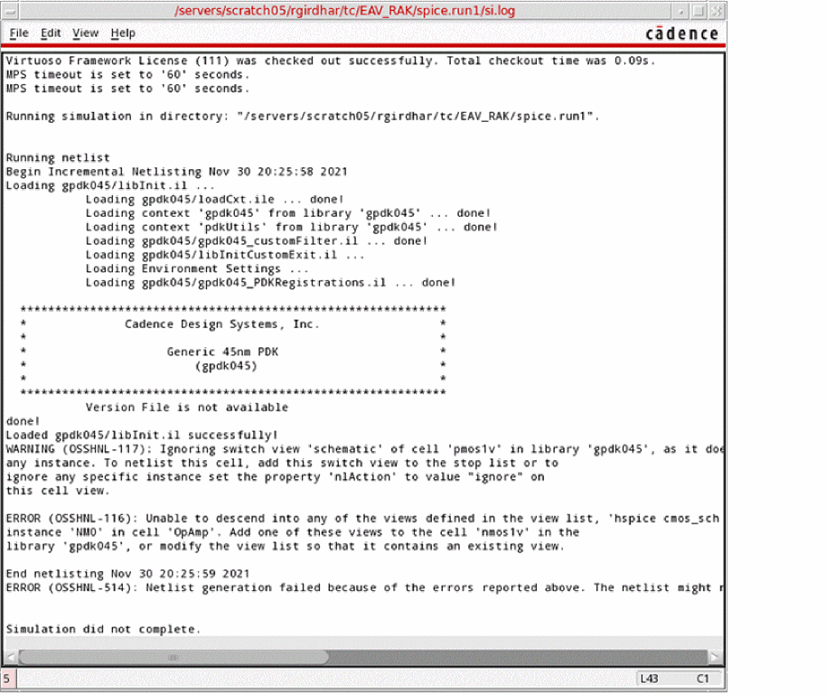

Managing Jobs Using the Job Monitor
The Job Monitor command in the Simulation menu lets you perform the following operations for a background analysis job:
- Check the job status
- Monitor the output
- Suspend the job
- Change the execution priority
- Stop the job
- View the run log
The background analysis jobs from SE appear in the Job Monitor form irrespective of whether you started them using the Simulation menu. The Simulation - Job Monitor command is enabled only after you have used the Initialize command to initialize the simulation environment and then run a simulation.
-
In the schematic window, choose Simulation – Job Monitor.
The Analysis Job Monitor form appears.
The form displays all SE background analysis jobs, whether they were started using the Simulation menu or otherwise. - Select the jobs for which you want to run the Job Monitor.
-
Choose an appropriate command from the Command menu.
-
Show Run Log to display the run log (
si.log) for the selected jobs in a new window.This run log contains the output from the simulation environment. It lists the simulation steps and their completion status. It also lists any error messages from SE, including the netlisters.
Alternatively, to access the run log of a job from SE: -
Set Priority to display the Set Priority form which lets you change the priority of the selected jobs. You can click and drag the Job Priority slider bar to the required value in the range
0-20. - Kill to terminate the selected jobs.
- Suspend to suspend the selected jobs.
- Continue to resume the jobs you suspended with the Suspend command.
- Remove Entry to delete the selected jobs from the Job Monitor window.
-
Show Run Log to display the run log (
- Choose Window – Close to close the Analysis Job Monitor form.
Related Topics
Return to top